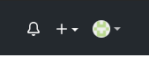

Sistema de control de versiones
Un sistema de control de versiones es la gestión de los diferentes cambios realizados en un proyecto, permitiendo tener un control de los avances del proyecto realizando versiones escaladas de forma ordenada. Estos sistemas facilitan la administración y seguimiento de las versiones de cada proyecto, este procedimiento puede realizare a mano pero es altamente recomendando utilizar un sistema de control de versiones o SVC "System Version Control", una de las mas utilizadas es GIT con su plataforma GITHUB.
GIT

Es un sistema de control de versiones distribuido que se encarga de almacenar el versionamiento del proyecto o producto en un conjunto de instantáneas de un mini sistema de archivos. Git maneja tres estados principales para organizar los archivos, estos son:
- Confirmado (commited) indica que los datos se almacenan de manera segura en tu base de datos local.
- Modificado (modified) indica que has realizado modificaciones sobre uno o varios de tus archivos y aun no lo has confirmado a tu base de datos local.
- Preparado (staged) indica que has marcado uno de los archivos modificados en su versión actual para que sea enviado en la próxima confirmación.
Crear un repositorio en Github
Desde Github creas un repositorio con el botón "+" de arriba a la derecha. Obviamente tienes que haberte registrado en Github para comenzar. El registro es gratuito.
Apareces en una página para que indiques los datos del repositorio. Básicamente tienes que darle un nombre, elegir si es público o privado y opcionalmente una descripción. Yo la parte que dice "Initialize this repository with a README" siempre la dejo desmarcada.
El tema de hacer el repositorio público o privado te lo tienen que decir los que te han pedido realizar esta tarea. Si no me equivoco, para hacer repositorios en privado debes tener una cuenta de pago en Github, por lo que entiendo que ellos te habrán pedido hacerlo público. Tendrás que salir de dudas con ellos Una vez que creas el repositorio mantén en el navegador de momento la página que te aparece en Github, porque tiene información importante que en seguida usaremos.
Subir el proyecto a Github con Push
Una vez tienes Git instalado, tienes que ir, en el terminal, a la carpeta de tu proyecto, entonces allí generas tu repositorio en local con la orden "init" (si es q no lo has hecho ya).
git init
Luego, desde la carpeta de haces el comando "add" para agregar todos los archivos al "staging area".
git add .
Luego lanzas el comando para el commit, que se lleva los archivos al repositorio para control de cambios. Es el siguiente:
git commit -m 'mi primer commit'
En vez de ‘mi primer commit’ pon algo que sea menos genérico y más relevante, relacionado con tu proyecto y el estado en el que estás ;)
Luego tienes q hacer el "push" desde tu repositorio local a remoto con los comandos que aparecen en la página de Github que hay justo después de haber creado el repositorio (allí donde te pedí que permanecieras con el navegador). Vuelve a tu navegador y los verás, abajo del todo, en la alternativa de subir un repositorio existente en local. Es algo como esto:
git remote add origin https://github.com/aqui-tu-repo.git
Y luego haces el propio push también con git:
git push -u origin master
Inisisto que estos dos comandos te aparecen justo en la página que llegas al crear un repositorio. Es bueno copiar y pegar de allí, porque aparecerá la URL de tu repositorio en GitHub y así no corres el riesgo de equivocarte al escribir